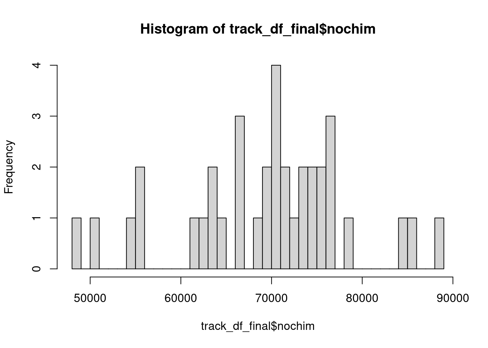

# Efficient loading of the packages
pacman::p_load(patchwork, dada2, phyloseq, Biostrings, tidyverse, install = FALSE)Making ASVs and a Phyloseq Object
Loading packages
Set the path to the seq files
# Set path to the gzipped files
path = "sra_sequencing_files"
# Read in metadata
meta <- read_csv("final_meta.csv")Rows: 36 Columns: 6
── Column specification ────────────────────────────────────────────────────────
Delimiter: ","
chr (5): sample, Run, irrigation, Rotation, season
dbl (1): Sample_Sum
ℹ Use `spec()` to retrieve the full column specification for this data.
ℹ Specify the column types or set `show_col_types = FALSE` to quiet this message.samples <- meta$Run
forward_reads <- paste0(samples, "_1.fastq.gz")
reverse_reads <- paste0(samples, "_2.fastq.gz")
write_lines(forward_reads, "forward_reads.tsv")
write_lines(reverse_reads, "reverse_reads.tsv")Okay so these are really fun -> they have randomly frameshifted primers, which means we need to trim those primers with cutadapt (not dada2).
# conda create -n new_cutadapt cutadapt
conda activate new_cutadapt
cutadapt --version
paste forward_reads.tsv reverse_reads.tsv | while read fr rr;
do
cutadapt -g CCTACGGGNGGCWGCAG -G GGACTACHVGGGTWTCTAAT --no-indels --discard-untrimmed --error-rate=0.2 --revcomp --cores 10 -o "trimmed_seqs/$fr" -p "trimmed_seqs/$rr" "sra_sequencing_files/$fr" "sra_sequencing_files/$rr"
doneOkay, not too bad! Let’s keep on moving.
Load in Forward and Reverse reads and assess the quality
# 1. Forward read variable
path = "trimmed_seqs"
forward_reads <-
list.files(path,
pattern = "_1.fastq.gz",
full.names = TRUE)
reverse_reads <-
list.files(path,
pattern = "_2.fastq.gz",
full.names = TRUE)
sample_names <-
basename(forward_reads) %>%
str_remove("_1.fastq.gz")
# Create a variable holding file names for the Forward and Reverse filtered reads
filtered_filepaths_forward <-
file.path("filtered", paste0(sample_names, "_R1_filtered.fastq.gz"))
filtered_filepaths_reverse <-
file.path("filtered", paste0(sample_names, "_R2_filtered.fastq.gz"))
# Show the quality of each base on the reads
set.seed(314)
random_plots <- sample(1:36, size = 12)
#
# forward_qual_plots <-
# plotQualityProfile(forward_reads[random_plots])
#
# reverse_qual_plots <-
# plotQualityProfile(reverse_reads[random_plots])
#
#
# write_rds(forward_qual_plots,
# file = "forward_qual_plots.rds",
# compress = "gz")
#
# write_rds(reverse_qual_plots,
# file = "reverse_qual_plots.rds",
# compress = "gz")
forward_qual_plots <- read_rds("forward_qual_plots.rds")
reverse_qual_plots <- read_rds("reverse_qual_plots.rds")
forward_qual_plotsreverse_qual_plotsWow, pretty good quality, at least for the forward, and lots of reads, which I appreciate. We need to keep in mind overlap. I think we’ll trim 30 off the forward, and 70 off the reverse, which should still give us an overlap of around 36 bp. Remember we already removed primers so no need to trimLeft.
Filter and Trim
set.seed(314)
# filtered_outs <-
# filterAndTrim(forward_reads,
# filtered_filepaths_forward,
# reverse_reads,
# filtered_filepaths_reverse,
# truncLen = c(270,230),
# maxN = 0,
# maxEE = c(2,2),
# truncQ = 2,
# rm.phix = TRUE,
# compress = TRUE,
# multithread = 30
# )
#
#
# write_rds(filtered_outs,
# file = "filtered_outs.rds",
# compress = "gz")
filtered_outs <- read_rds("filtered_outs.rds")
# filt_forward_qual_plots <-
# plotQualityProfile(filtered_filepaths_forward[random_plots])
#
# filt_reverse_qual_plots <-
# plotQualityProfile(filtered_filepaths_reverse[random_plots])
# write_rds(filt_forward_qual_plots,
# file = "filt_forward_qual_plots.rds",
# compress = "gz")
#
# write_rds(filt_reverse_qual_plots,
# file = "filt_reverse_qual_plots.rds",
# compress = "gz")
filt_forward_qual_plots <- read_rds("filt_forward_qual_plots.rds")
filt_reverse_qual_plots <- read_rds("filt_reverse_qual_plots.rds")
filt_forward_qual_plotsfilt_reverse_qual_plotsfiltered_outs %>%
as.data.frame() %>%
summarize(Median_Reads_In = median(reads.in),
Median_Reads_Out = median(reads.out),
Median_Reads_Removed = Median_Reads_In - Median_Reads_Out,
Percent_Removed = Median_Reads_Removed / Median_Reads_In) Median_Reads_In Median_Reads_Out Median_Reads_Removed Percent_Removed
1 155425.5 98481 56944.5 0.3663781I’m ok with that. 36% is a lot of reads being removed but we had quite a bit of excess to spare so I’d rather be more conservative.
Did we lose any samples?
filtered_outs %>%
as.data.frame() %>%
dplyr::filter(reads.out == 0) %>%
rownames() %>%
str_remove("_1.fastq.gz")character(0)No.
Generate an error model
# error_models_forward <-
# learnErrors(filtered_filepaths_forward,
# multithread = 30,
# verbose = FALSE
# )
# error_models_reverse <-
# learnErrors(filtered_filepaths_reverse,
# multithread = 30,
# verbose = FALSE
# )
# write_rds(error_models_forward, file = "error_models_forward.rds")
# write_rds(error_models_reverse, file = "error_models_reverse.rds")
error_models_forward <- read_rds("error_models_forward.rds")
error_models_reverse <- read_rds("error_models_reverse.rds")
# Plot the errors
# the estimated error rates (black line) are a good fit to the observed rates (points), and the error rates drop with increased quality as expected
plotErrors(error_models_forward,
nominalQ = TRUE)Warning: Removed 82 rows containing missing values or values outside the scale range
(`geom_line()`).
Removed 82 rows containing missing values or values outside the scale range
(`geom_line()`).plotErrors(error_models_reverse,
nominalQ = TRUE)Warning: Removed 82 rows containing missing values or values outside the scale range
(`geom_line()`).
Removed 82 rows containing missing values or values outside the scale range
(`geom_line()`).Those look prety good to me, no crazy dips in the model.
Inferring ASVs on the forward and reverse sequences
# dada_forwards <-
# dada(filtered_filepaths_forward,
# err = error_models_forward,
# multithread = 30)
#
#
# dada_reverses <-
# dada(filtered_filepaths_reverse,
# err = error_models_reverse,
# multithread = 30)
#
#
# write_rds(dada_forwards,
# file = "dada_forwards.rds",
# compress = "gz")
#
# write_rds(dada_reverses,
# file = "dada_reverses.rds",
# compress = "gz")
dada_forwards <- read_rds("dada_forwards.rds")
dada_reverses <- read_rds("dada_reverses.rds")Merge forward and reverse ASVs
# merged_amplicons <-
# mergePairs(dada_forwards,
# filtered_filepaths_forward,
# dada_reverses,
# filtered_filepaths_reverse,
# verbose = FALSE)
# write_rds(merged_amplicons,
# file = "merged_amplicons.rds",
# compress = "gz")
merged_amplicons <- read_rds("merged_amplicons.rds")Generate a count table!
seqtabs <- makeSequenceTable(merged_amplicons)
seqtabs %>%
getSequences %>%
nchar %>%
table %>%
sort.
398 434 435 442 444 447 449 452 456 464 474 479 484 387 399 400
1 1 1 1 1 1 1 1 1 1 1 1 1 2 2 2
433 436 443 451 453 465 473 438 440 448 454 388 437 450 270 389
2 2 2 2 3 3 3 4 4 4 4 5 5 7 12 13
441 432 386 414 417 420 416 439 419 412 418 415 403 413 425 410
24 26 37 38 64 66 75 80 103 109 124 130 138 143 164 194
408 411 421 422 431 423 426 407 427 406 409 424 428 405 430 404
225 263 286 286 297 385 418 667 685 826 922 1999 2673 2780 3279 4327
429
4955 Check & Remove for Chimeras (Bimeras)
# seqtab_nochim <- removeBimeraDenovo(seqtabs,
# multithread = 30)
#
# write_rds(seqtab_nochim, file = "seqtab_nochim.rds")
seqtab_nochim <- read_rds("seqtab_nochim.rds")
asvs <- dim(seqtab_nochim)[2]
# What proportion of counts were removed?
chim_check <- sum(seqtab_nochim)/sum(seqtabs)
frac_removed <- (1-chim_check)*100We removed 2.2066051% of reads when filtering for chimaeras.
Size Selection
I’m gonna do the same thing I did with the Props paper, and keep anything larger than 400bp.
asv_keeps <- nchar(getSequences(seqtab_nochim)) > 400
seqtab_nc_len <- seqtab_nochim[,asv_keeps]We removed all ASVs that were smaller than 400bp.
Track the sequences through the pipeline
# create a little function to identify number seqs
getN <- function(x) sum(getUniques(x))
dada_forward_reads <-
map_dbl(dada_forwards, getN)
dada_reverse_reads <-
map_dbl(dada_reverses, getN)
merged_reads <-
map_dbl(merged_amplicons, getN)
sum_filter_df <-
filtered_outs %>%
as.data.frame() %>%
rownames_to_column(var = "sample_name") %>%
mutate(sample_name = str_remove(sample_name, "_1.fastq.gz")) %>%
group_by(sample_name) %>%
summarize(input = sum(reads.in),
filtered = sum(reads.out)) %>%
dplyr::filter(filtered > 0)
# Make the table to track the seqs
track_df <- sum_filter_df %>%
cbind(dada_forward_reads,
dada_reverse_reads,
merged_reads,
rowSums(seqtab_nc_len))
head(track_df) sample_name input filtered dada_forward_reads
SRR18309615_R1_filtered.fastq.gz SRR18309615 151502 88533 80364
SRR18309616_R1_filtered.fastq.gz SRR18309616 172090 99716 93593
SRR18309619_R1_filtered.fastq.gz SRR18309619 146189 94135 86402
SRR18309630_R1_filtered.fastq.gz SRR18309630 145976 92782 83856
SRR18309641_R1_filtered.fastq.gz SRR18309641 126601 75493 68309
SRR18309652_R1_filtered.fastq.gz SRR18309652 179745 113986 106638
dada_reverse_reads merged_reads
SRR18309615_R1_filtered.fastq.gz 83388 62493
SRR18309616_R1_filtered.fastq.gz 94703 76721
SRR18309619_R1_filtered.fastq.gz 88162 65037
SRR18309630_R1_filtered.fastq.gz 86817 64088
SRR18309641_R1_filtered.fastq.gz 70079 49683
SRR18309652_R1_filtered.fastq.gz 108552 86330
rowSums(seqtab_nc_len)
SRR18309615_R1_filtered.fastq.gz 61162
SRR18309616_R1_filtered.fastq.gz 75436
SRR18309619_R1_filtered.fastq.gz 63662
SRR18309630_R1_filtered.fastq.gz 62729
SRR18309641_R1_filtered.fastq.gz 48672
SRR18309652_R1_filtered.fastq.gz 84009# Change column names
colnames(track_df) <- c("sample" , "input", "filtered", "denoisedF", "denoisedR", "merged", "nochim")
rownames(track_df) <- track_df$sample
# Generate a plot to track the reads through our DADA2 pipeline
track_df %>%
pivot_longer(input:nochim, names_to = "read_type", values_to = "num_reads") %>%
mutate(read_type = fct_relevel(read_type,
"input", "filtered", "denoisedF", "denoisedR", "merged", "nochim")) %>%
ggplot(aes(x = read_type, y = num_reads, fill = read_type)) +
#facet_grid(~strata) +
geom_line(aes(group = sample)) +
geom_point(shape = 21, size = 3, alpha = 0.8, color = "grey") +
scale_fill_brewer(palette = "Spectral") +
theme_bw() +
labs(x = "Filtering Step", y = "Number of Sequences") +
theme(legend.position = "bottom",
axis.text.x = element_text(angle = 45, vjust = 1, hjust = 1))track_df_final <-
track_df %>%
mutate(perc_reads_retained = nochim / input) %>%
left_join(meta, by = c("sample" = "Run")) %>%
rename(sample_name = sample.y)hist(track_df_final$perc_reads_retained, breaks = 50)hist(track_df_final$nochim, breaks = 50)
No major breaks that stress me out, and even the lowest sample has many reads (>40,000)
Taxonomic Assignment
taxa <- assignTaxonomy(seqtab_nc_len, "/workdir/databases/silva_v138/version_2/silva_nr99_v138.2_toGenus_trainset.fa.gz",
multithread=20,
tryRC = TRUE)
write_rds(taxa, file = "taxa.rds")
taxa <- read_rds("taxa.rds")
new_tax_tab <- taxa %>%
as.data.frame() %>%
rownames_to_column(var = "ASVseqs")
head(new_tax_tab) ASVseqs
1 TAGGGAATCTTCCGCAATGGACGAAAGTCTGACGGAGCAACGCCGCGTGAGTGATGAAGGCTTTCGGGTCGTAAAACTCTGTTGTTAGGGAAGAACAAGTACGAGAGTAACTGCTCGTACCTTGACGGTACCTAACCAGAAAGCCACGGCTAACTACGTGCCAGCAGCCGCGGTAATACGTAGGTGGCAAGCGTTATCCGGAATTATTGGGCGTAAAGCGCGCGCAGGCGGTTTCTTAAGTCTGATGTGAAAGCCCACGGCTCAACCGTGGAGGGTCATTGGAAACTGGGGAACTTGAGTGCAGAAGAGAAAAGCGGAATTCCACGTGTAGCGGTGAAATGCGTAGAGATGTGGAGGAACACCAGTGGCGAAGGCGGCTTTTTGGTCTGTAACTGACGCTGAGGCGCGAAAGCGTGGGGAGCAAACAGG
2 TGGGGAATATTGGACAATGGGCGAAAGCCTGATCCAGCAATGCCGCGTGAGTGATGAAGGCCTTAGGGTTGTAAAGCTCTTTTACCCGGGATGATAATGACAGTACCGGGAGAATAAGCCCCGGCTAACTCCGTGCCAGCAGCCGCGGTAATACGGAGGGGGCTAGCGTTGTTCGGAATTACTGGGCGTAAAGCGCACGTAGGCGGCTTTGTAAGTTAGAGGTGAAAGCCCGGGGCTCAACTCCGGAATTGCCTTTAAGACTGCATCGCTAGAATTGTGGAGAGGTAAGTGGAATTCCGAGTGTAGAGGTGAAATTCGTAGATATTCGGAAGAACACCAGTGGCGAAGGCGACTTACTGGACACATATTGACGCTGAGGTGCGAAAGCGTGGGGAGCAAACAGG
3 TAGGGAATCTTCCACAATGGACGAAAGTCTGATGGAGCAACGCCGCGTGAGCGATGAAGGCCTTCGGGTCGTAAAGCTCTGTTGTTAGGGAAGAACAAGTACCGGAGTAACTGCCGGTACCTTGACGGTACCTAACCAGAAAGCCACGGCTAACTACGTGCCAGCAGCCGCGGTAATACGTAGGTGGCAAGCGTTGTCCGGAATTATTGGGCGTAAAGCGCGCGCAGGCGGTCCTTTAAGTCTGATGTGAAAGCCCACGGCTCAACCGTGGAGGGTCATTGGAAACTGGGGGACTTGAGTGCAGAAGAGGAAAGCGGAATTCCACGTGTAGCGGTGAAATGCGTAGAGATGTGGAGGAACACCAGTGGCGAAGGCGGCTTTCTGGTCTGTAACTGACGCTGAGGCGCGAAAGCGTGGGGAGCAAACAGG
4 TAGGGAATCTTCCGCAATGGACGAAAGTCTGACGGAGCAACGCCGCGTGAGTGATGAAGGCTTTCGGGTCGTAAAACTCTGTTGTTAGGGAAGAACAAGTACAAGAGTAACTGCTTGTACCTTGACGGTACCTAACCAGAAAGCCACGGCTAACTACGTGCCAGCAGCCGCGGTAATACGTAGGTGGCAAGCGTTATCCGGAATTATTGGGCGTAAAGCGCGCGCAGGCGGTTTCTTAAGTCTGATGTGAAAGCCCACGGCTCAACCGTGGAGGGTCATTGGAAACTGGGGAACTTGAGTGCAGAAGAGAAAAGCGGAATTCCACGTGTAGCGGTGAAATGCGTAGAGATGTGGAGGAACACCAGTGGCGAAGGCGGCTTTTTGGTCTGTAACTGACGCTGAGGCGCGAAAGCGTGGGGAGCAAACAGG
5 TAAGGAATATTGCGCAATGGGCGAAAGCCTGACGCAGCGACGCCGCGTGGGGGATGAAGGTCTTCGGATTGTAAACCCCTTTCGGGAGGGAAGATGGGATGGGGTAACCCATTCGGACGGTACCTCCAGAAGCAGCCACGGCTAACTTCGTGCCAGCAGCCGCGGTAATACGAAGGTGGCAAGCGTTGTTCGGATTTACTGGGCGTACAGGGAGCGTAGGCGGTTGGATAAGCCCTCCGTGAAATCTCCAGGCTTAACCTGGAAAGTGCAGAGGGGACTGTTCAGCTAGAGGATGGGAGAGGAGCGCGGAATTCCCGGTGTAGCGGTGAAATGCGTAGAGATCGGGAGGAAGGCCGGTGGCGAAGGCGGCGCTCTGGAACATTTCTGACGCTGAGGCTCGAAAGCGTGGGGAGCAAACAGG
6 TAGGGAATCTTCGGCAATGGGCGAAAGCCTGACCGAGCAACGCCGCGTGAGCGATGAAGGCCTTCGGGTCGTAAAGCTCTGTTGTTAAGGAAGAACAAGTACGAGAGTAACTGCTCGTACCTTGACGGTACTTAACGAGAAAGCCACGGCTAACTACGTGCCAGCAGCCGCGGTAATACGTAGGTGGCGAGCGTTATCCGGAATTATTGGGCGTAAAGCGCGCGCAGGCGGTTTCTTAAGTCTGATGTGAAAGCCCACGGCTCAACCGTGGAGGGTCATTGGAAACTGGGAAACTTGAGTGCAGAAGAGGAAAGCGGAATTCCACGTGTAGCGGTGAAATGCGTAGAGATGTGGAGGAACACCAGTGGCGAAGGCGGCTTTCTGGTCTGTAACTGACGCTGAGGCGCGAAAGCGTGGGGAGCAAACAGG
Kingdom Phylum Class Order
1 Bacteria Bacillota Bacilli Bacillales
2 Bacteria Pseudomonadota Alphaproteobacteria Sphingomonadales
3 Bacteria Bacillota Bacilli Bacillales
4 Bacteria Bacillota Bacilli Bacillales
5 Bacteria Nitrospirota Nitrospiria Nitrospirales
6 Bacteria Bacillota Bacilli Bacillales
Family Genus
1 Bacillaceae Priestia
2 Sphingomonadaceae Sphingomonas
3 Bacillaceae Neobacillus
4 Bacillaceae Priestia
5 Nitrospiraceae Nitrospira
6 Bacillaceae Ectobacillus# intution check
stopifnot(new_tax_tab$ASVseqs == colnames(seqtab_nc_len))
asv_headers <- vector(dim(seqtab_nc_len)[2], mode = "character")
# loop through vector and fill it in with ASV names
for (i in 1:dim(seqtab_nc_len)[2]) {
asv_headers[i] <- paste(">ASV", i, sep = "_")
}
# intitution check
head(asv_headers, 20) [1] ">ASV_1" ">ASV_2" ">ASV_3" ">ASV_4" ">ASV_5" ">ASV_6" ">ASV_7"
[8] ">ASV_8" ">ASV_9" ">ASV_10" ">ASV_11" ">ASV_12" ">ASV_13" ">ASV_14"
[15] ">ASV_15" ">ASV_16" ">ASV_17" ">ASV_18" ">ASV_19" ">ASV_20"##### Rename ASVs in table then write out our ASV fasta file!
asv_tab <- t(seqtab_nc_len)
## Rename our asvs!
row.names(asv_tab) <- sub(">", "", asv_headers)
# Now let's add the ASV names
rownames(new_tax_tab) <- rownames(asv_tab)
### Final prep of tax table. Add new column with ASV names
asv_tax <-
new_tax_tab %>%
# add rownames from count table for phyloseq handoff
mutate(ASV = rownames(asv_tab)) %>%
# Resort the columns with select
dplyr::select(Kingdom, Phylum, Class, Order, Family, Genus, ASV, ASVseqs)
# Intution check
stopifnot(asv_tax$ASV == rownames(asv_tax), rownames(asv_tax) == rownames(asv_tab))Make a phyloseq object
colnames(asv_tab) <- str_remove(colnames(asv_tab), "_R1_filtered.fastq.gz")
row.names(track_df_final) <- track_df_final$sample
zhang_phylo <- phyloseq(
otu_table(asv_tab, taxa_are_rows = TRUE),
tax_table(as.matrix(asv_tax)),
sample_data(track_df_final)
)
clean_zhang_phylo <-
zhang_phylo %>%
subset_taxa(Family != "Mitochondria" | is.na(Family)) %>%
subset_taxa(Order !="Chloroplast" | is.na(Order))
# Removed six ASVs that were mitochondria
save(clean_zhang_phylo, file = "clean_zhang_phylo.RData")